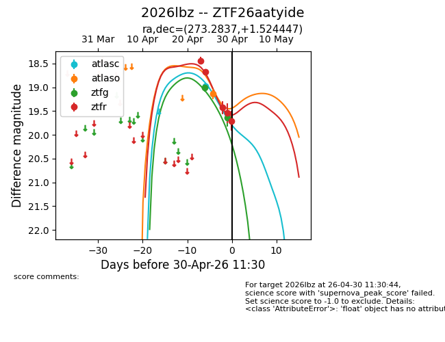
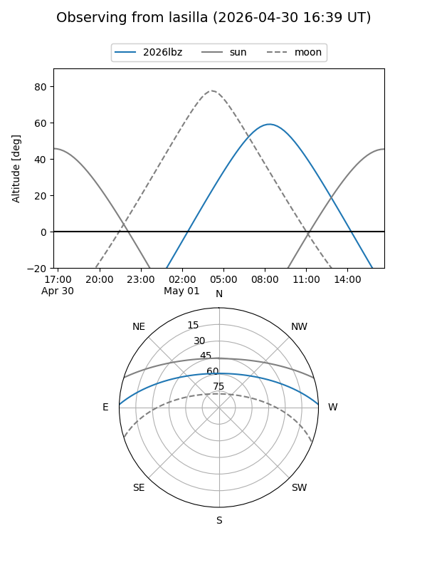
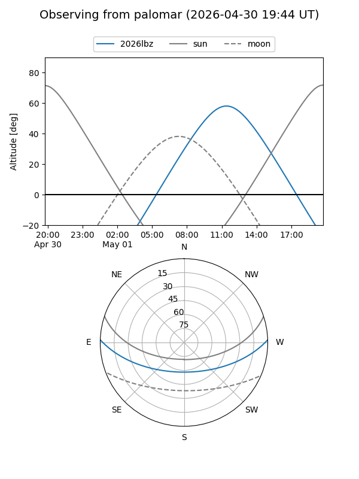
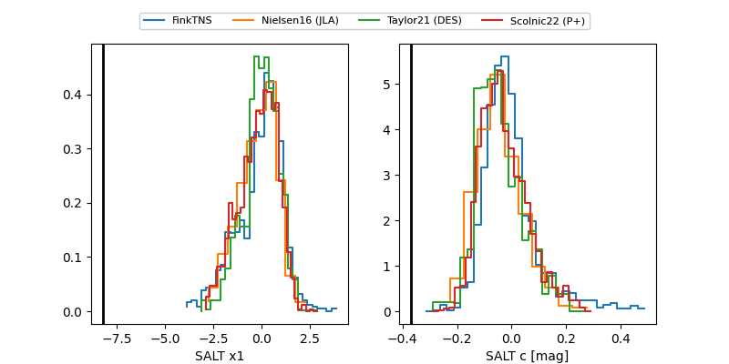

2026lbz
Target 2026lbz at 2026-04-30 11:35
Aliases and brokers:
FINK: link
Lasair: link
ALeRCE: link
TNS: link
YSE: link
alt names
ZTF26aatyide (ztf,fink_ztf)
2026lbz (tns,yse)
Coordinates:
equatorial (ra, dec) = 273.2837,+1.52445
equatorial (HMS+DMS) = 18:13:08.10,+01:31:28.01
galactic (l, b) = (29.9035,+9.21438)
Flags:
Photometry:
last atlasc=18.98, atlaso=19.14, ztfg=19.63, ztfr=19.71
1 atlasc, 1 atlaso, 2 ztfg, 5 ztfr detections
Lightcurve

Visibility


Additional plots
